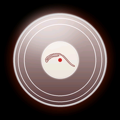
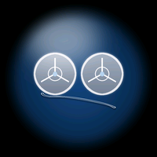
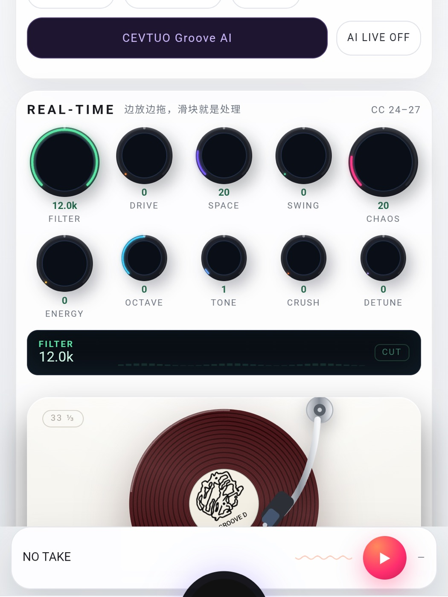
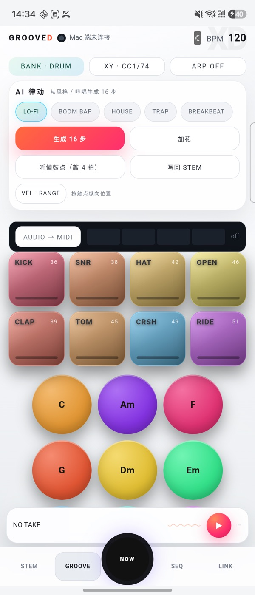
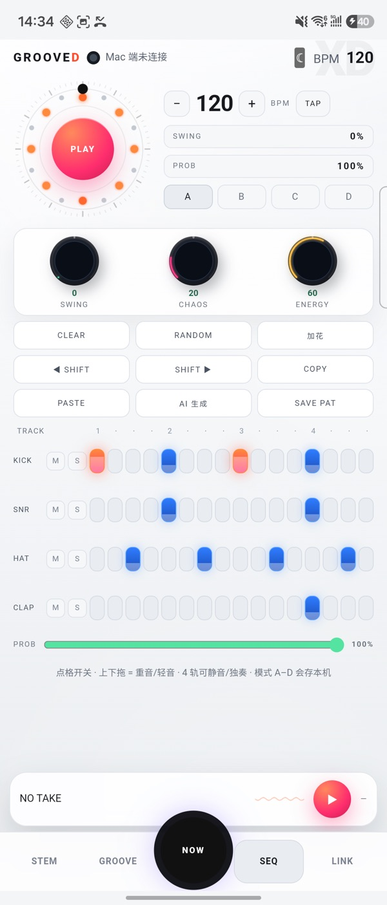
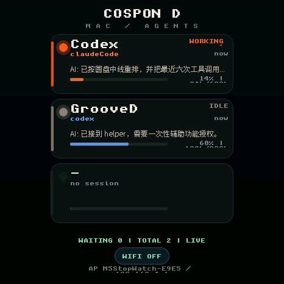
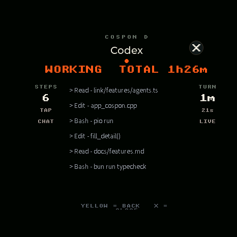
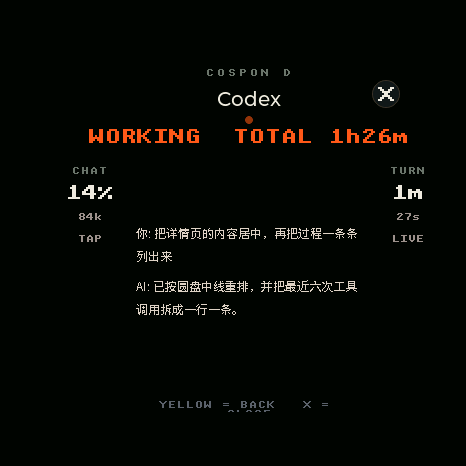

CEVTUO CONSPON-D
一块 M5Stack StopWatch、一部 Android 手机、一台 Mac。手表上看 agent 的实时过程， 按 CONTINUE / HANDOFF 让电脑继续；手机负责声音，Mac 负责计算与会话。下面是一份可索引的完整说明。
A TABLE
OF CONTENTS
三端，一条链
CEVTUO CONSPON-D 是一套 三端协作的 agent 控制台：手表负责“看”和“按”，手机负责“听”和“编排”，Mac 负责“算”和“发”。它不是把聊天窗口缩小到手表上，而是把 Mac 上正在跑的 Claude Code / Codex 会话，整理成适合 466 圆屏的卡片、过程和动作。
手表端跑在 M5Stack StopWatch（ESP32-S3，16MB Flash / 8MB PSRAM）上，四个独立 App：COSpon D、Stem D、Groove D、Muse D。COSpon D 通过 USB 串口或 Wi-Fi 从 Mac 拿到 AG / SESS / STEP / MSG / PERM / END 快照；点卡片进入全屏详情，默认先看 STEPS（最近 6 次工具调用），左侧柱子切回 CHAT；顶部是整段对话的 TOTAL，右侧是本轮的 TURN。
手机端是 GrooveD（Android WebView + 原生桥），六个页面共用一套会话表和行协议：NOW、STEM、REAL-TIME、GROOVE、SEQ、LINK。它负责录音、YIN 音高、Krumhansl 调性、确定性编曲、WebAudio、SMF 导出，也负责把 Mac 地址、片段和曲名送到手表。
Mac 端没有 UI 窗口，只有一个 Deno 服务和一条 Swift 串口桥：HTTP :8765 提供编曲、LLM、agent 快照、审批队列和动作；串口桥把每一行协议写进手表，也把 G1 … 读回来变成 MIDI / 动作。数据源是 CrewTower 的机器级会话表，不额外挂第二套 hook。
- WatchM5Stack StopWatch · 466×466 · ESP32-S3 · LVGL · unscii + 12px CJK
- PhoneAndroid WebView · AudioRecord · MediaSession · MediaProjection · SMF
- MacDeno :8765 · Swift serial bridge · CrewTower sessions.json · LaunchAgent
- LinkUSB serial + Wi-Fi HTTP，同一套行协议，同一个 handle_line()
- TimeturnSec（本轮） / sessionSec（整个会话）
为什么读 CrewTower：它已经把 Claude / Codex / DSH 的会话归一成一条记录，连别的 App 里的会话也能看到。再挂一套 hook 只会得到第二份互不相干的真相。
COSpon D 的屏幕
主屏是三张会话卡：标题是项目名（如 Codex），副标题是 agent（如 claudeCode），右侧是状态和年龄；上下文进度条按 tokens / limit 计算。卡片不显示宿主 App 名，避免把“Cherry Studio”“ChatGPT”当成会话本身。
点卡片进入 全屏详情：黑底、米白点阵字、单一橙色呼吸点。顶部是 COSPON D / 项目名 与状态行；左侧柱是 STEPS 或 CHAT（点一下切换），右侧柱是 TURN 本轮耗时。中间是最近 6 次工具调用或最近 8 条消息，内容变化时把最新一条放在中间偏下；末尾留白让最后一条能滚到中线。右上角 X 和黄色返回键都能退出。
过程是一条一条列出来的：服务端从 transcript 反向取最近 6 个 tool_use，格式是 Name - description，固件用 STEP <slot>|<text> 收下。这样你能看到它在读哪个文件、跑哪条命令、改哪一块，而不是只看到一句“在思考”。
时间分两层：顶部 TOTAL 是这个会话从开始到现在的总时长；右侧 TURN 是本轮从最后一条 user 消息开始的耗时。working 时橙色点做 900ms 明暗循环，waiting 时状态色常亮，idle 时灰色常亮。卡片状态行也带分钟。
- Font英文标签/数字 unscii_8 / unscii_16；中文正文 12px CJK
- Layout全屏 466×466，内容按半径 233 的圆盘约束；两侧 60px 无框文字柱
- STEPS最近 6 次 tool_use，一条一行
- CHAT最近 8 条消息，最新一条中间偏下，可滚动
- CloseX / 黄色返回键 / 点背景
另外三个 D
Stem D：四段弧对应四轨音量，长按静音、双击独奏；中央黑胶可搓，白色标签显示 now playing。它接收 G1 STEM/MUTE/SOLO/PLATTER/MASTER/BPM，把推子变化发回 Mac。
Groove D：8 个鼓垫、4 根 CC 推子、BPM/FX 旋钮、磁带机页。触摸映射成 NOTEON / NOTEOFF / CC；BPM 与 FX 走同一条链路，磁带机页做停止与变速。
Muse D：双系统分区里的第二个 OTA 槽（ota_1）。进入/返回不破坏电源轨；Muse 休息时会关掉 OLED 的 L3B 轨，所以 apply-app.sh 在启动前用 I2C 把 IO3/4/5/8/10 重新拉高，否则就是黑屏。
四个 App 独立注册，互不依赖；手表上的视觉统一为复古硬件语言：黑底、米白点阵、橙色 LED、细线分隔。
- Stem D四段弧 / 静音 / 独奏 / 黑胶搓盘 / now playing
- Groove D8 鼓垫 / 4 CC / BPM / FX / 磁带机
- Muse D第二个 OTA 槽 / 双系统分区 / 电源轨恢复
- SharedG1 行协议 · USB Serial/JTAG · 振动 / 屏幕录制
 COSpon DWATCH / AGENT
COSpon DWATCH / AGENT
Stem DWATCH / STEMS
Groove DWATCH / PADS Muse DWATCH / OTA B
Muse DWATCH / OTA B GrooveDPHONE / APK
GrooveDPHONE / APK CEVTUO XDMAC / WEB
CEVTUO XDMAC / WEBGrooveD 六个页面
NOW 读取系统媒体会话：标题、歌手、封面、进度、播放态；中央圆盘 + 32 点轨道 + CEVTUO NOW AI。AI 读歌名/歌手给一句律动建议，可一键转 STEM；离线时用标题哈希给确定性建议，并明确标注“本地”。
STEM 是作品层：HUM 用 AudioRecord 22050Hz，YIN 差分函数 + 累积均值 + 抛物线插值，5 帧中位 + 连续 2 帧一致才认音；调性用 24 个大小调 Krumhansl 模板；编曲是确定性引擎，风格表给 16 分鼓型与和弦进行；变体 4 个，变异 9 种；导出 SMF Format 0（division 480，鼓通道 9）。
REAL-TIME 是演奏层：10 个旋钮、唱机、三段 EQ、NOISE/MAIN/VOCAL、PERFORM 穹顶和灯圈。所有参数进 WebAudio 链，同时发 CC 24–34；搓盘发 PLATTER。
GROOVE 8 鼓垫 + 9 和弦垫 + XY + 4 CC；力度按触点纵向位置；能听懂鼓点、按 16 分量化、写回 STEM。SEQ 2.0 16 步 × 4 轨、三档力度、M/S、A–D 模式、概率/摆动/TAP、三个宏旋钮、径向灯轮。LINK 是控制台：六格状态、API KEY、MAC HOST、发送 Mac 地址、主题、日志。
- AudioAudioRecord 22050 · YIN · Krumhansl · WebAudio · 8 samples
- MIDISMF Format 0 · division 480 · drum ch 9 · CC 20–34
- CaptureMediaProjection AudioPlaybackCapture → four-band RMS → CC
- Hostadb reverse / LAN · localStorage theme · API key to Mac
手机端功能不依赖 Mac：播放器、唱机、鼓垫、和弦垫、音序器、本地合成与本地 MIDI 都能离线用。只有 LLM 和外部 MIDI 才需要 Mac。
Mac 是引擎，不是窗口
Mac 端只有一个 Deno 服务和一个 Swift 串口桥。服务监听 0.0.0.0:8765，提供编曲、LLM、agent 快照、审批队列、动作和手机/手表的桥。它不画 UI，所有界面都在手机或手表上；本机的网页控制台只是同一份服务的另一个视图。
串口桥自动找 /dev/cu.usbmodem*，把服务产出的 AG / SESS / STEP / MSG / PERM / NET / END 逐行写进手表；同时读回手表的 G1 STEM / MUTE / SOLO / PLATTER / NOTEON / NOTEOFF / CC / PERM / ACTION / MASTER / BPM，转成 MIDI 或动作。
服务装在 ~/Library/Application Support/grooved-link/，桥在 grooved-bridge/。不要放在 ~/Documents：launchd 没有那个目录的 TCC 权限，进程会卡在 open()，看起来活着、日志正常，但端口永远不监听。
- HTTP
/api/studio/*·/api/agents/*·/api/groove/*·/health - Serial
/dev/cu.usbmodem*· 115200 · line protocol - DataCrewTower
sessions.json· transcript JSONL ·~/.grooved/llm.key - AutoLaunchAgent
com.cevtuo.grooved-link/-bridge - Logs
~/Library/Logs/grooved-link.log·grooved-serial.log
一条线，三层
一次快照从 AG 开始，到 END 才提交。中间可以有 3 个会话、每个会话最多 8 条消息、6 条过程、一条待批权限。固件在 AG 只写 staging，END 才一次性重画——否则卡片会在 activity 和最新消息之间来回跳。
AG <pending> <count> SESS <agent>|<app>|<state>|<activity>|<tokens>|<limit>|<project>|<age>|<turnSec>|<sessionSec> STEP <slot>|<tool - description> # 最近 6 次 MSG <slot>|<role>|<text> # 最近 8 条 PERM <id>|<tool>|<detail> # 没有则 PERM - NET <mac-lan-ip> END
Wi-Fi 路径是 GET /api/agents/watch；USB 路径是串口桥逐行写。两条路最终进入同一个 handle_line()，所以不会长出两种行为。手表回给 Mac 的行以 G1 开头；审批是 G1 PERM <id> allow|deny，两个动作是 G1 ACTION <slot> continue|handoff。
- AG快照开始：待批数 + 会话数
- SESSagent/app/state/activity/tokens/limit/project/age/turn/session
- STEP最近 6 次 tool_use，一条一行
- MSG最近 8 条 user/assistant 文本
- PERM待批 id / 工具 / 参数；PERM - 表示没有
- END提交 staging 并重画
- ACT动作回执，底栏保留 20 秒
换地方也不用重新配
USB 是最稳的链路：Mac 执行 adb reverse tcp:8765 tcp:8765（手机用），手表插上 USB 后串口桥每 2 秒写一次快照。设备名 G1 HELLO stem-d / groove-d / C1 HELLO cospon 用来确认谁在线。
Wi-Fi 第一次要配网：COSPON D → WIFI ON，手表进入 M5StopWatch-XXXX 配置 AP；手机连它、填家里的 Wi-Fi；然后回到 LINK 页按「发送 Mac 地址到手表」。地址写进 NVS，之后开 Wi-Fi 自动连。
换地方：如果那个 Wi-Fi 已经保存过，手表会自己连；连上后广播 GROOVED? 到 UDP 41234，Mac 回 GROOVED <ip> <port>，手表自动更新 NVS。这样 Mac 的 DHCP 地址变了也不用再回手机点一次。全新的 Wi-Fi 仍需一次配网——Android 和 macOS 都不会把已保存的 Wi-Fi 密码交给 App，这一步没有安全的自动化办法。
状态行会把失败说清楚：WIFI <ip>、| NO HOST（没拿到 Mac 地址）、| CONN FAIL（连不上）、| SHORT（响应不完整）。底部是 LIVE 或具体原因，不再是统一的 NO BRIDGE。
- AP
M5StopWatch-XXXX·192.168.4.1 - USB
/dev/cu.usbmodem*· 2s 快照 - Wi-Fi
GET /api/agents/watch· 3s timeout - DiscoverUDP 41234 ·
GROOVED?→GROOVED <ip> - NVS
grooved/net
Wi-Fi 快照按块读到 is_complete_data_received()，16KB 缓冲。单次 read 4095 字节会把 3 会话 × 8 消息的 END 截掉，表现就是“连上了但什么都不显示”。
Continue / Handoff
HANDOFF：把会话、项目、agent、状态、token、transcript、最近 8 条对话和「下一步」写成 <cwd>/docs/handoff-YYYYMMDD-HHMM.md，并把「读 <path>，然后继续。」放进 Mac 剪贴板。写文件失败会返回 ok:false，手表显示 HANDOFF FAIL。
CONTINUE：Codex 会话直接 codex exec resume <thread-id> "继续处理" -C <cwd> -s workspace-write --approve-for-me。Claude / Cherry 没有可用的 CLI resume，也不允许后台服务合成按键；所以用一个可授权的小 App COSPOND Send.app：Accessibility 找到 composer → 读 AXValue，有草稿就返回 DRAFT 不动 → 否则 Cmd+V + Return。
第一次需要在「系统设置 → 隐私与安全性 → 辅助功能」里打开 COSPOND Send.app。没有授权时服务如实返回 NOT_TRUSTED，手表显示 CONTINUE FAIL，提示词仍在剪贴板；授权后才会真的让 Cherry 输入并回车。动作回执在底栏保留 20 秒：CONTINUE READY / HANDOFF READY / FAIL。
- Triggerstate == idle 时显示两个键
- Wire
G1 ACTION <slot> continue|handoff - Server
POST /api/agents/action - Codex
codex exec resume· log~/Library/Logs/grooved-continue.log - Claude
COSPOND Send.app· Accessibility · draft check - Feedback
ACT <slot> …· 20s
全链路与两条时序
快照链路：CrewTower 把每个会话写成 sessions.json；服务读它，再用 transcript 补最近 8 条消息、最近 6 次工具调用、本轮起点和会话起点；/api/agents/watch 生成纯文本快照；USB 串口桥或 Wi-Fi HTTP 送进手表；固件在 END 一次性提交。
动作链路：手表按下 CONTINUE/HANDOFF → G1 ACTION → 串口桥 → POST /api/agents/action → Codex resume 或 COSPOND Send.app → ACT 回执回手表。审批链路同理：PERM 下行，G1 PERM allow|deny 上行。
- 快照CrewTower → Deno → USB/Wi-Fi → watch → END 提交
- 动作watch → bridge → Deno → Cherry/Codex → ACT
- 审批hook → /request → PERM → G1 PERM → /decide
- 发现watch → UDP GROOVED? → Mac → IP → NVS
截图与录屏









装好，连上
Phone / APK
下载 GrooveD.apk（1.2 MB，debug 签名），允许未知来源安装。USB 用 adb reverse tcp:8765 tcp:8765；Wi-Fi 在 LINK 填 Mac 局域网 IP。
Watch / Firmware
固件包包含四个 App 的 C++ 源码、unscii + CJK 字体、预编译 bin 和 flash 脚本。日常升级只写 0x20000，保留 NVS。
Firmware ZIP XD page →Mac / Host
Deno 服务 + 串口桥 + LaunchAgent + CONTINUE helper。装完在辅助功能里打开 COSPOND Send.app，CONTINUE 才会真的按键。
第一次使用：手机装 APK → 手表刷固件 → Mac 装宿主并 bash install.sh → 手机 LINK 填 Mac 地址（USB 或 Wi-Fi）→ 手表 COSPON D 打开。COSPON D 的卡片应在 2 秒内出现会话。
Wi-Fi 换地方：已保存过的 Wi-Fi 会自动连；连上后 UDP 自动发现 Mac。全新 Wi-Fi 需要在手表 WIFI ON 后，用手机连 M5StopWatch-XXXX 配网一次。
- APK
/xd/GrooveD.apk - Firmware
/xd/downloads/CEVTUO-XD-firmware.zip - Mac
/xd/downloads/CEVTUO-XD-mac.zip - Logs
~/Library/Logs/grooved-*.log
边界与版本
权限：CONTINUE 的 UI 自动化需要 macOS 辅助功能授权；没有授权时服务不会假装成功，而是返回 NOT_TRUSTED，手表显示 FAIL，提示词留在剪贴板。helper 在检测到 composer 里已有草稿时返回 DRAFT，不会覆盖你正在写的内容。
Wi-Fi：全新网络仍需一次配网；已保存网络自动连并自动发现 Mac。Wi-Fi 快照 3 秒超时，失败会在状态行写出 NO HOST / CONN FAIL / SHORT。
版本：2026-10-20。手表固件 RAM 29.2% / Flash 95.3%；APK 1.2MB；Mac 宿主包含 Deno 服务、串口桥、LaunchAgent 与 helper。分发页：/xd/；本页：/conspon-d/。
- Repo
~/Documents/Cevtuo-X-D - Handoff
docs/handoff-2026-10-20-cospon-ui.md - Firmware
device/app/app_cospon/app_cospon.cpp - Server
link/features/agents.ts·link/server.ts - Helper
tools/cospond-send.swift